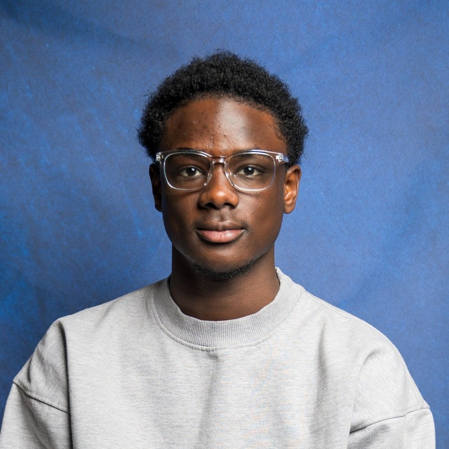
I am Alvin Tete-Djawu, and I'm honored to be the son of a Ghanaian immigrant single mother who came to the United States for a better life. She worked overnight shifts while building a catering business, and her sacrifices gave me and my two younger sisters, Keziah and Renee, dreams far bigger than the confines of our two-bedroom apartment.
At Cornell University, I study Applied Economics and Management alongside Information Science. I'm drawn to the place where technology, people, and strategy meet, and I want to make things that ease life for the people who use them.
The people closest to a problem are often the farthest from its solution, and I'm living proof that anyone can bridge the gap between their reality and the change they want to see in the world. This site is my story so far, and there's much more to write, so welcome.
Where I Come From
Worcester, MA, or Mini-Ghana, as I call it, is home. By the grace of God, I traded the asphalt courts of Lincoln Village, where I shot my Wilson ball until I couldn't see the rim, for the lecture halls of an Ivy League school.
I don't despise humble beginnings, and I embrace them because they turned me into the resilient young man I am today. This city taught me to work hard, look out for the people around me, and keep going when things get tough. In north Worcester, bumpers are held together by duct tape and prayers, and people make what they have last.
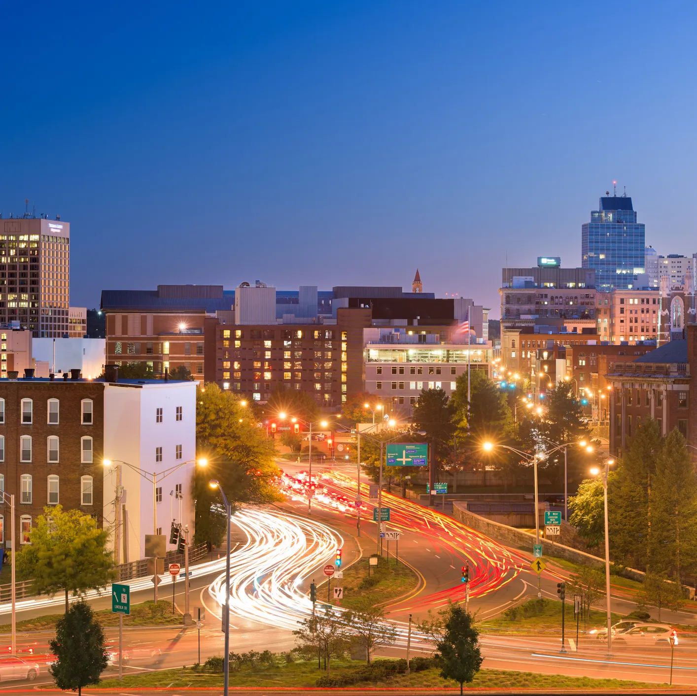
I've since moved, and I'm grateful for the friends and family there who still pour into me and cheer me on from home.
Home also has a smell I carry with me. After a day of crayons and fooling around with my classmates in elementary school, I came home to my mom in the kitchen, making Kenkey, Tsofi, and Pepper with extra love and spice.
I am Ghanaian, and it shows in everything I do, from the family food business to the documentary I made about my heritage to the lens I see life through.
When I was younger, I was embarrassed to be an immigrant's child, but I've grown to love my Ghanaian roots, and I've learned that hiding who you are means losing a part of yourself.
In high school, I snacked on Chin Chin, a Ghanaian pastry, during free periods, even after I was told it looked like dog food. My heritage is a part of where I come from, and it plays an even bigger part in where I'm headed.
Before the Ivy
Each of my three schools before Cornell pushed me in a different way, and together they prepared me for higher education and everything beyond.
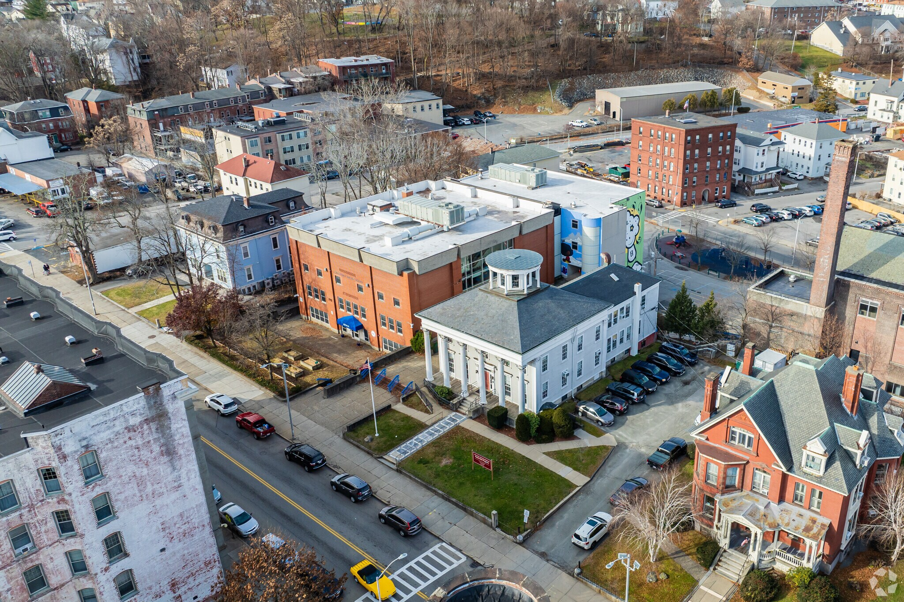
Jacob Hiatt Magnet School is where my school story starts, and it gave me my first taste of what a good school can do for a kid.
From kindergarten through elementary school, teachers who cared pushed me to strive for more and to care about something other than cartoons.
Outside of my appreciation for the art of four-square, I'm grateful that my Jacob Hiatt family pushed me to get involved in my community, love others, and be a star student, just like our motto said.
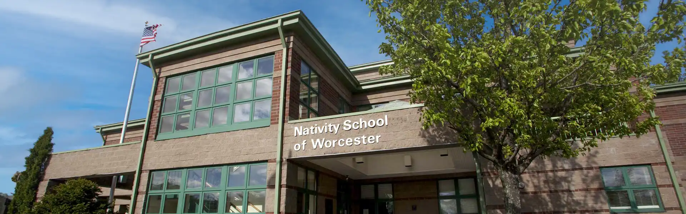
School days at Nativity ran from 7:45 a.m. to 6:30 p.m., and as a fifth grader I felt the long hours and the formal dress code were too much for a 10-year-old. The discipline I built there became a driving force in my success and my hunger for more.
Every July brought the Summer of Service, three weeks given to community service. During my first one, my class repainted the back wall of an elementary school across from a playground, and while I smeared paint across the brick, the principal, who remembered me from my elementary days, caught me off guard with a hug.
In the fashion of a true Nativity man, I learned our pillars, including scholarship, service, and character, and I plan to carry those values for the rest of my life. Well after middle school ended, my Nativity brothers are still people I love and care about, and I will never forsake the Nativity community.
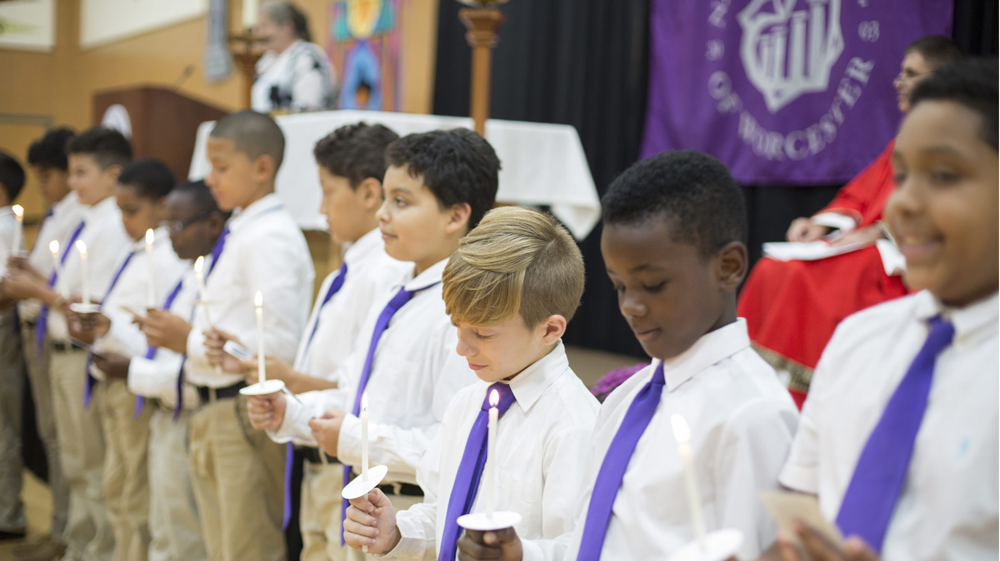
I was dubbed Big Al the day I guarded a student almost a foot taller than me in a basketball game, and I lost a student council election to an eighth grader as a fifth grader and was encouraged to keep going. Moments like these taught me to push myself to the limit and work for what I didn't yet have.
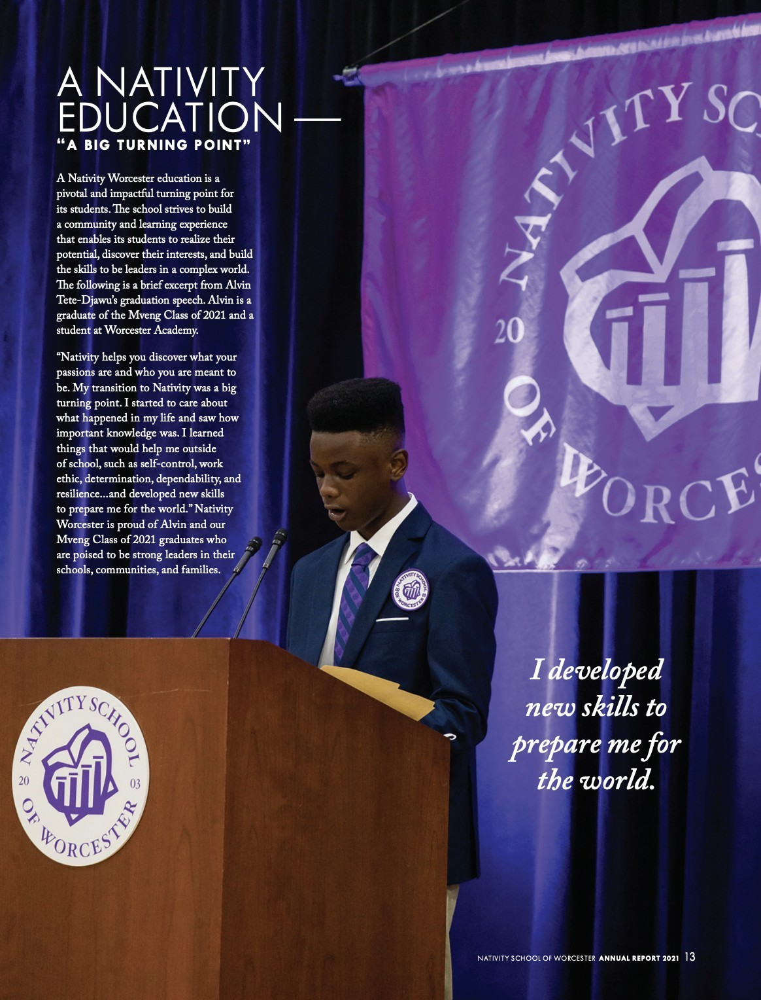
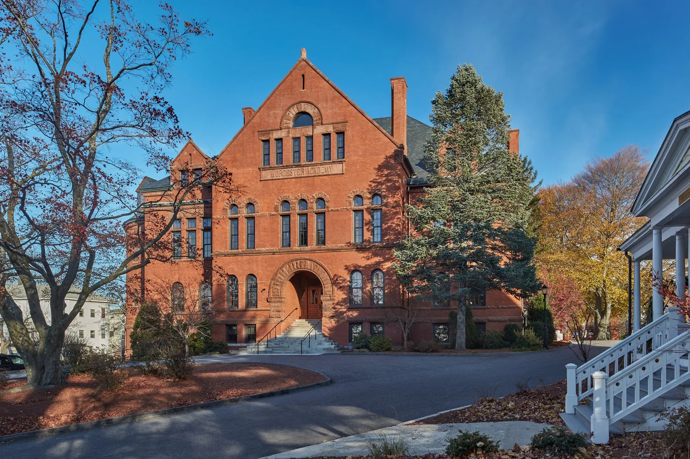
Worcester Academy is where I learned the most about myself. My learning moved fastest there, with a schedule made up mostly of AP classes, and I was blessed to play basketball and co-lead the school's Black Student Union.
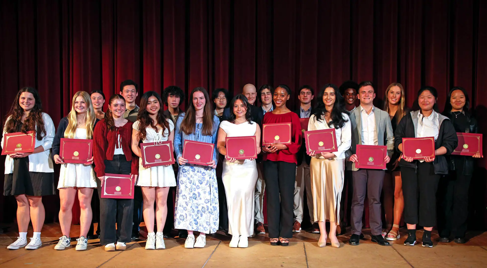
On my first day, I was the only Black student in my grade, and I sat alone in the corner of Spanish II while my classmates chatted. That evening, Bill, a classmate who noticed my basketball screensaver, got me on the court, where I lost a one-on-one game to his crossovers.
Each day, my mom's 2003 Toyota RAV4 pulled through the gates behind a line of Teslas and Mercedes. That contrast taught me to find my footing in environments not built with me in mind, and to keep growing no matter the setting.
From my trip to Denver for the SDLC to the hours I spent after school in Mrs. Thompson's office with a family I would eventually leave but never forget, I came out stronger.
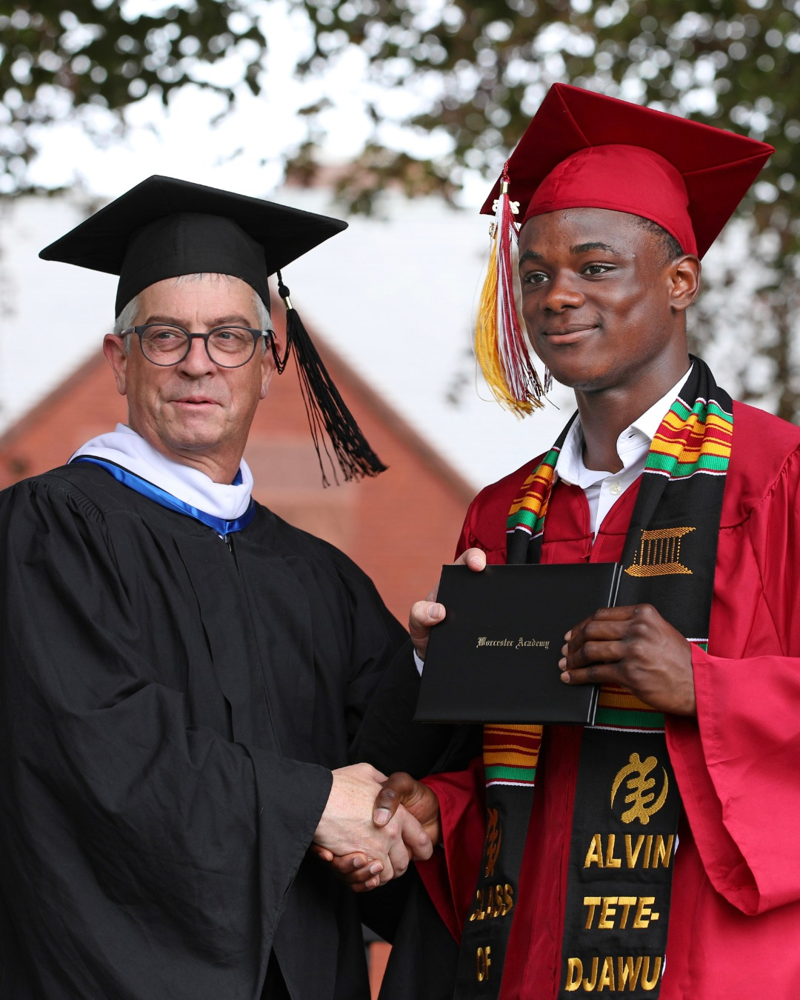
Worcester Academy was a rehearsal for life, where I learned I can make it through anything and walked out ready for rooms I didn't choose and work I had to earn.
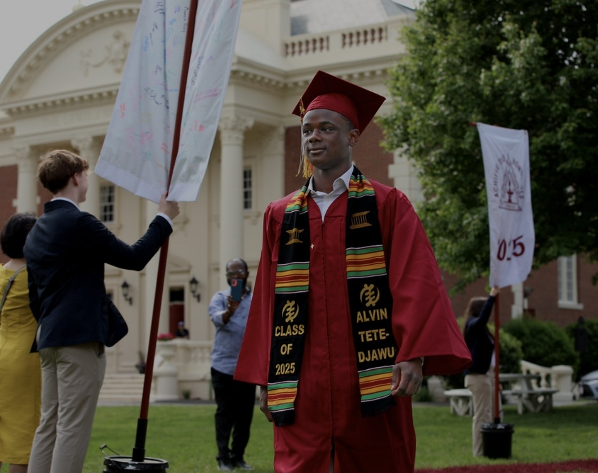
Cornell University
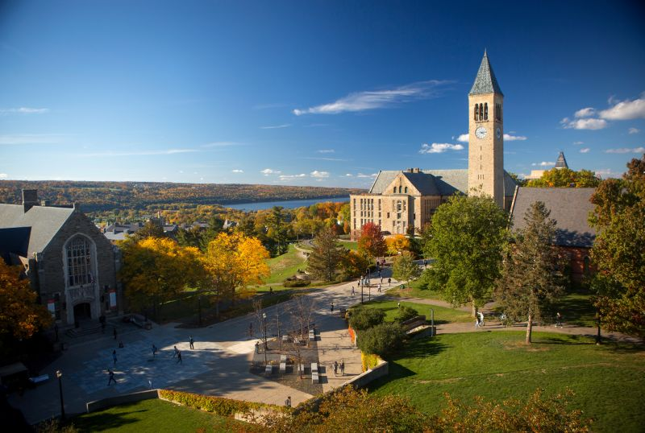
Now, at Cornell, I study Applied Economics and Management and Information Science.
After a year of applied economics, I wanted the hard skills to ideate and act on ideas as a creator, and information science gives me the technical skills to go alongside the theory that applied economics provides.
I had no experience when I added information science, so every class has been a chance to learn something new, and inexperience is only an opportunity to better equip yourself to change the future.
Here, I'm a QuestBridge Scholar, a member of the FGLI cohort of the KKR Accelerator Scholars program, and I completed all three phases of Oliver Wyman's First-Year Immersion Program.
As a first-generation, low-income student, I know how much it helps when someone shows you the way, and that's why I try to do the same for others.
Outside of class, I keep busy. I'm a business analyst with Cornell Consulting, I work in Cornell Athletics, and this summer I was a resident advisor for the Pre-Collegiate Summer Scholars Program.
I'm also vice president of Sounds of Spirit, a Christian worship organization that brings the African diaspora together with rhythms from home and invites everyone to join us in praising God.
Campus Involvements
- QuestBridge Scholar
- KKR Accelerator Scholars (FGLI Cohort)
- Adobe Student Ambassador
- Pre-Collegiate Summer Scholars Program Resident Advisor
- Sounds of Spirit Executive Board VP
- Ghanaian Students Association
- Oliver Wyman First-Year Immersion
What Comes Next
I consider myself a lifelong learner, and I'm thankful for my past experiences, but they will never be enough to satisfy me because there is always more in store.
At 13, I filled a notebook with song lyrics and a half-written plan to fix men's hair care, a problem I kept meeting in the aisles of Target. I never finished that plan, but I never lost the habit of spotting what's missing and wanting to build it, and that habit is what draws me to consulting, strategy, and product.
Right now, I'm taking the time to learn what lines up with my interests and my skills, and the best proof of where I'm headed is the work I've already done, so that's where I'd like to take you next.
See My Work and Impact